This tutorial assumes that you are using the Seventh Edition of Assembly Language for x86 Processors. We show you how to set up Visual Studio 2015.
Topics:
- Tutorial: Building a 32-Bit Assembly Language Program
- MASM syntax highlighting
- Creating a Project from Scratch
- Using the Visual Studio debugger
Found an error in this document? Please email the author. Except where noted, all instructions in this document apply equally to Visual Studio and Visual Studio Express.
Required Setup for 32-bit Applications
First, when installing install Visual Studio, be sure to select Visual C++ under the Programming Languages category. (If you forget to do this, you can always restart the installation and modify the existing installation.) Visual Studio includes Microsoft Assembler (MASM) version 14. Look for the file named ml.exe in the \vc\bin folder of your Visual Studio installation directory, such as c:\Program Files (x86)\Microsoft Visual Studio 12.0\vc\bin.Installing the Book's Example Programs
Click this link to get the latest copy of the book's link libraries and example programs. The examples are stored in a Microsoft Install (.MSI) file that installs into the c:\Irvine folder. Unless you have some objection to using that location, do not alter the path. (Note to lab administrators: you can designate c:\Irvine directory as read-only.) If you plan to change the installation location, read our instructions relating to Creating a Project from Scratch.
The folllowing files will be copied into the c:\Irvine directory:
| Filename | Description |
| b16.asm, b32.asm | Blank templates for 16-bit and 32-bit assembly language source files |
| GraphWin.inc | Include file for writing Windows applications |
| Irvine16.inc | Include file used with the Irvine16 link library (16-bit applications) |
| Irvine16.lib | 16-bit link function library used with this book |
| Irvine32.inc | Include file used with the Irvine32 link library (32-bit applications) |
| Irvine32.lib | Irvine's 32-bit link library |
| Irvine64.obj | Irvine's 64-bit library |
| Kernel32.lib | 32-bit link library for Windows API |
| Link16.exe | 16-bit Microsoft linker |
| Macros.inc | Irvine's macro include file (see Chapter 10) |
| make16_vs2012.bat | Visual Studio 2012 batch file for building 16-bit applications |
| make16_vs2013.bat | Visual Studio 2013 batch file for building 16-bit applications |
| SmallWin.inc | Small-sized include file containing MS-Windows definitions, used by Irvine32.inc |
| User32.lib | MS-Windows basic I/O link library |
| VirtualKeys.inc | Keyboard code definitions file, used by Irvine32.inc |
A subdirectory named Examples will contain all the example programs shown in the book, source code for the book's 16-, 32-, and 64-bit libraries, and two sample projects for earlier versions of Visual Studio.
Setting up Visual Studio
You will only have to do these steps the first time you use Visual Studio.Add the Start Without Debugging command to the Debug menu
It's very useful to run programs without having to debug them. To do that, you will want to add a new command to the Debug menu: Start Without Debugging. Here's how to do it:
- From the Tools, menu, select Customize.
- Select the Commands tab.
- Select Menu bar (radio button).
- Click the Add Command button.
- Select Debug from the Categories list.
- Select Start Without Debugging in the right-hand list box.
- Click the OK button.
- Click the Close button.
In fact, you can use the same sequence to customize any of the menus and toolbars in Visual Studio.
Select the C++ Configuration
Visual Studio supports multiple programming languages and application types. The C++ programming language configuration most closely matches that of assembly language programming, so we suggest the following steps:- Select Tools | Import and Export Settings from the menu
- Select the "Import selected environment settings" radio button
- Select the "No, just import..." radio button
- Select "Visual C++" from the Default Settings List and click the Next button
- Click the Finish button, then click the Close button
- Notice the tabs on the left and right sides of the Visual Studio workspace. Close the Server Explorer, Toolbox, and Properties tabs. Use the mouse to drag the Solution Explorer tool window to the right side of the workspace. You can also select other tabs at the bottom of this window, such as "Class View", "Property Manager", and "Team Explorer", and close them. They will not be used in the future. If you need to bring back the Solution Explorer window at any time in the future, select View from the menu, and locate Solution Explorer in the list of views.
Set the Tab Size to 5
(This is an optional step.) Start Visual Studio, and select Options from the Tools menu. Select Text Editor, Select All Languages, and select Tabs. Optionally, you may want to select the Insert spaces radio button:
Set the Tab Size and Indent Size to 5.
Tutorial: Building a 32-Bit Assembly Language Program
Now you're ready to open and build your first 32-bit project.Opening a Project
Visual Studio requires assembly language source files to belong to a project, which is a kind of container. A project holds configuration information such as the locations of the assembler, linker, and required libraries. A project has its own folder, and it holds the names and locations of all files belonging to it.
Right-click here to download a zip file containing an up-to-date Visual Studio 2015 project that has been configured for assembly language. After downloading this file, un-zip it into your working directory. It contains a sample asm test file named AddTwo.asm.
Do the following steps, in order:
- Start Visual Studio.
- To begin, open our sample Visual Studio project file by selecting File/Open/Project from the Visual Studio menu.
- Navigate to your working folder where you unzipped our project file, and select the file named Project.sln.
- Once the project has been opened, you will see the project name in the Solution Explorer window. You should also see an assembly language source file in the project named AddTwo.asm. Double-click the file name to open it in the editor.
You should see the following program in the editor window:
; AddTwo.asm - adds two 32-bit integers. ; Chapter 3 example .386 .model flat,stdcall .stack 4096 ExitProcess proto,dwExitCode:dword .code main proc mov eax,5 add eax,6 invoke ExitProcess,0 main endp end main |
In the future, you can use this file as a starting point to create new programs by copying it and renaming the copy in the Solution Explorer window.
Build the Program
Now you will build (assemble and link) the sample program. Select Build Project from the Build menu. In the Output window for Visual Studio at the bottom of the screen, you should see messages similar to the following, indicating the build progress:
1>------ Build started: Project: Project, Configuration: Debug Win32 ------ 1> Assembling ..\Project32_VS2015\AddTwo.asm... 1> Project.vcxproj -> ...\Project32_VS2015\Debug\Project.exe ========== Rebuild All: 1 succeeded, 0 failed, 0 skipped ========== |
If you do not see these messages, the project has probably not been modified since it was last built. No problem--just select Rebuild Project from the Build menu.
Run the Program
Select Start without Debugging from the Debug menu. The following console window should appear, although your window will be larger than the one shown here:
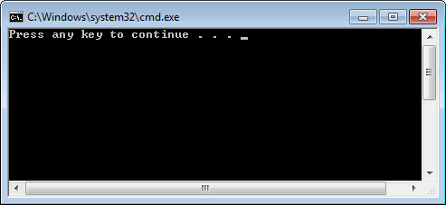
The "Press any key to continue..." message is automatically generated by Visual Studio.
Congratulations, you have just run your first Assembly Language program!
Press any key to close the Console window.
|
TIP: When you assembled and linked the project, a file named Project.exe was created inside the project's \Debug folder. This file executes when you run the project. You can execute Project.exe by double-clicking its name inside Windows Explorer, but it will just flash on the screen and disappear. That is because Windows Explorer does not pause the display before closing the command window. On the other hand, you can open a Command prompt window, move to the Debug directory, and run Project.exe by typing "Project" (without the quotes). You will need to do some reading on Windows shell commands if you plan to use the command line. |
Any time you want to remove a source file from the Visual Studio window, right-click its filename and select Remove. The file will not be deleted from the file system. On the other hand, if you want to delete the file, select it and press the Del key.
Step 5: Running the Sample Program in Debug Mode
In this step, you set a breakpoint inside the sample program. Then you use the Visual Studio debugger to step through the program's execution one statement at a time.
- Make sure the ASM source code file is open in the editor window.
- To begin stepping through your program in Debug mode, press the F10 key.
- A yellow arrow should appear next to the first program statement.The arrow indicates that the statement is next to be executed.
- Press the F10 key (called Step Over) to execute the current statement. Continue pressing F10 until the program is about to execute the invoke statement.
- A small black window icon should appear on your Windows status bar. Open it and look at the contents of the Command window. The window should be blank because this program does not display any output.
- Press F10 one more time to end the program.

Registers
If you want to display the CPU registers, do the following: Start debugging the program, then select Windows from the Debug menu. Select Registers from the drop-down list. The Registers window may appear at the bottom of the workspace, as a tab highlighted in yellow. Use the mouse to drag the window to the right side of the work area. Right click inside the Registers window and check the item Flags to enable the display of CPU status flags.
You can interrupt a debugging session at any time by selecting Stop Debugging from the Debug menu. You can do the same by clicking the maroon-colored square button on the toolbar. To remove a breakpoint from the program, click on its red dot to make it disappear.
Setting a BreakPoint
If you set a breakpoint in a program, you can use the debugger to execute the program a full speed (more or less) until it reaches the breakpoint. At that point, the debugger drops into single-step mode.
- In our sample program, click the mouse along the border to the left of the mov eax,5 statement. A large red dot should appear in the margin.
- Select Start Debugging from the Debug menu. The program should run, and pause on the line with the breakpoint, showing the same Yellow arrow as before.
- Press F10 until the program finishes.
You can remove a breakpoint by clicking its red dot with the mouse. Take a few minutes to experiment with the Debug menu commands. Set more breakpoints and run the program again. For the time being, you can use the F11 key to step through the program in the same way the F10 key did.
Building and Running Other Programs
Suppose you want to run another example program, or possibly create your own program. You can remove the existing assembly language file from the Solution Explorer window and insert a new .asm file into the project.
- To remove a program from a project without deleting the file, right-click its name in the Solution Explorer window. In the context menu, select Remove. If you change your mind and decide to add it back to the project, right-click in the same window, select Add, select Existing item, and select the file you want to add.
Adding a File to a Project
An easy way to add an assembly language source file to an open project is to drag its filename with the mouse from a Windows Explorer window onto the name of your project in the Solution Explorer window. The physical file will not be copied--the project only holds a reference to the file's location. Try this now:
- Remove the AddTwo.asm file from your project.
- Add a reference to the file Examples\ch03\AddTwoSum.asm to the project.
- Build and run the project.
Copying a Source File
One way to make a copy of an existing source code file is to use Windows Explorer to copy the file into your project directory. Then, right-click the project name in Solution Explorer, select Add, select Existing Item, and select the filename.
Building 16-bit Applications (Chapters 14-17)
Only Chapters 14 through 17 require you to build 16-bit applications. Except for a few exceptions, which are noted in the book, your 16-bit applications will run under the 32-bit versions of Windows (XP, Vista, 7). But 16-bit applications will not run directly in any 64-bit version of Windows.
If you plan to build 16-bit applications, you need to add two new commands to the Visual Studio Tools menu. To add a command, select External Tools from the Tools menu. The following dialog will appear, although many of the items in your list on the left side will be missing. The filename in the sample image (make16.bat) has been replaced by two files:
- make16_vs2012.bat for Visual Studio 2012)
- make16_vs2013.bat for Visual Studio 2013)
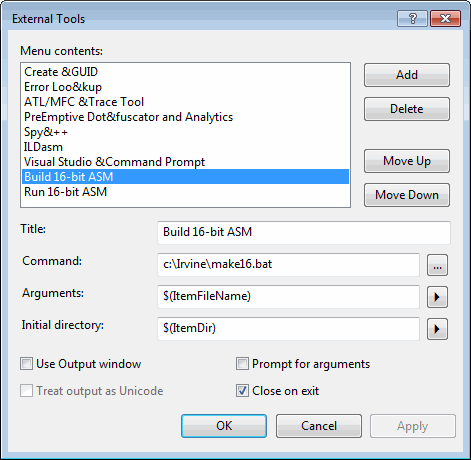
Step 1: Create the Build 16-bit ASM Command
Click the Add button and fill in the Title, Command, Arguments, and Initial directory fields as shown in the screen snapshot. If you click the buttons with arrows on the right side of the Arguments and Initial directory fields, a convenient list appears. You can select an item without having to worry about spelling:

Click the Apply button to save the command.
Step 2: Create the Run 16-bit ASM Command
Click the Add button again, and create a new command named Run 16-bit ASM:

Uncheck the "Close on exit" option and click the OK button to save the command and close the External Tools dialog.
Testing Your new 16-Bit Commands
To test your new 16-bit commands, close any Visual Studio project that happens to be open. Then, select File | Open | File from the menu and choose the file named 16-bit.asm from the ch03 folder in the book's example programs. Select Build 16-bit ASM from the Tools menu. The following command window should appear, showing the successful execution of the assembler and linker, followed by a listing of all files related to this program:

Press a key to close the window. Next, you will run the program. Select Run 16-bit ASM from the Tools menu. The following window will appear, although the contents of all registers except EAX will be different:

Press a key to close the window.
You have completed the setup for building and running 16-bit assembly language programs.
Creating a Project From Scratch
Visual Studio makes it possible (in 12 easy steps) to create an Assembly Language project from scratch. In the first step, you will create a Win32 Console application designed for C++, and just modify the custom build rules.
Step 1: Select New from the File menu, then select Project. In the New Project window, select Win32 under Visual C++ in the left panel, and select Win32 Console Application in the middle panel. Give your project a suitable name (near the bottom of the window):
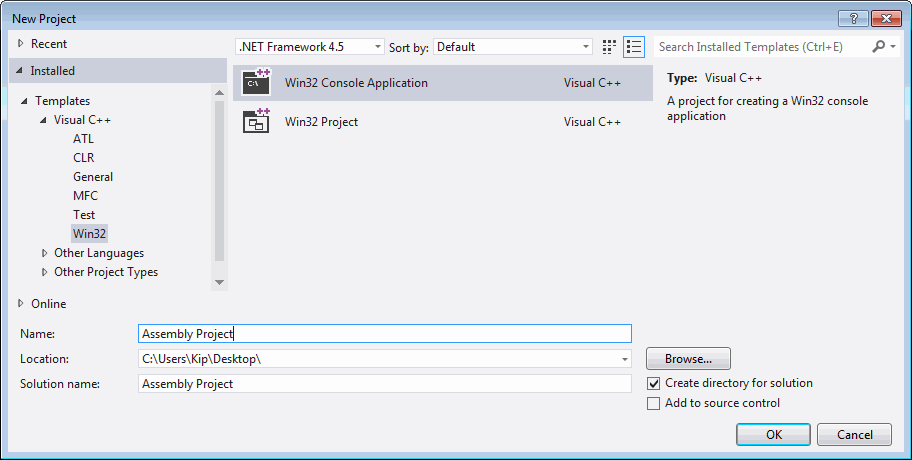
(Depending on your Visual Studio configuration, you might have to find Visual C++ under the "Other Languages" category in the left panel.)
Step 2: Click the OK button to continue. The Win32 Application Wizard window will appear. Select Application Settings, and then select the Empty project check box.
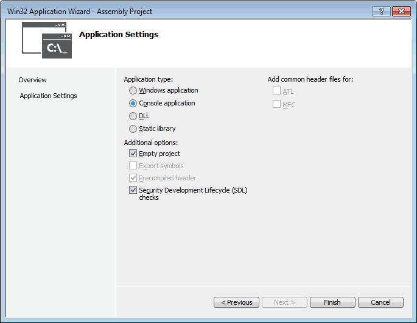
Step 3: Click the Finish button to save the new project.
Step 4: In the Solution Explorer window, delete the Header Files, Resource Files, and Source Files folders. They are not necessary. In the same window, right click your project name and select Build Customizations from the popup menu. When you see this window, select the check box next to masm and click the OK button to close the dialog.
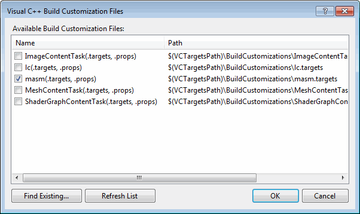
Step 5: Select Properties from the Project menu. Expand the entry under Configuration Properties. Then expand the entry named Microsoft Macro Assembler. This is what you should see:
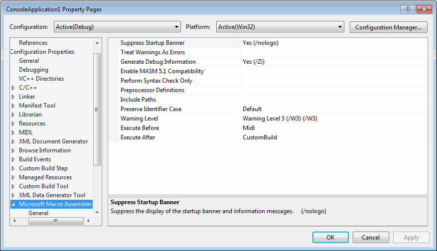
Step 6: Modify the Include Paths option so it equals "C:\Irvine". This tells the assembler where to find files having a filename extension of ".inc". Here is a sample:
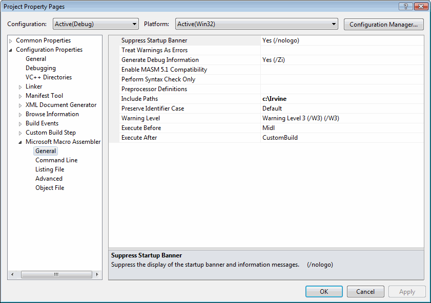
Step 7: Next, select the Listing File entry, also in the Microsoft Macro Assembler group. Modify the Assembled Code Listing File entry (shown below) so it contains $(ProjectName).lst. This uses a built-in variable to identify the name of the source input file, with a file extension of .lst. So, if your program were named main.asm, the listing file would be named main.lst: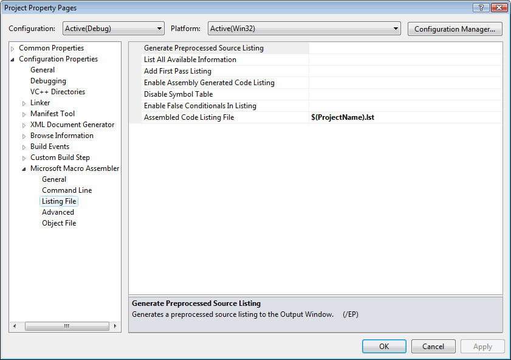
Step 8: Find the Linker entry under Configuration Properties. Select the Input entry, and insert irvine32.lib; at the beginning of the Additional Dependencies entry. The irvine32.lib file is the link library file supplied with this book. The filenames must be separated by semicolons.
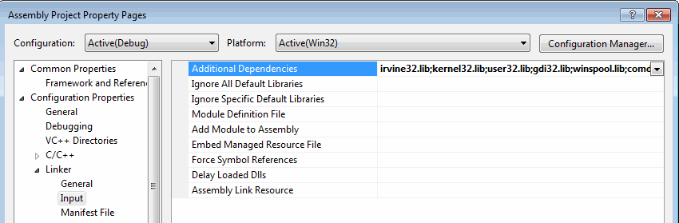
Step 9: Select Linker under Configuration Properties, and then select General. The Additional Library Directories entry must contain c:\Irvine so the linker can find the Irvine32.lib library file:
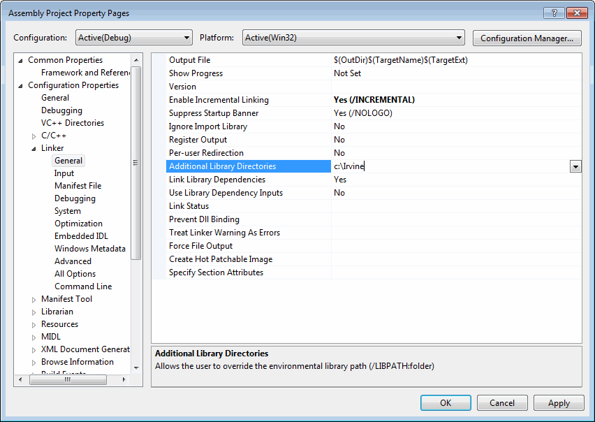
Step 10: Select Linker under the Configuration Properties and select Debugging. Verify that the Generate Debug Info option is equal to Yes:
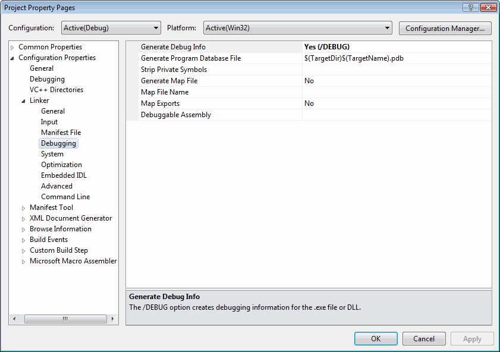
Step 11: Select Advanced under the Linker entry. Set the Image Has Safe Exception Handlers option to No.
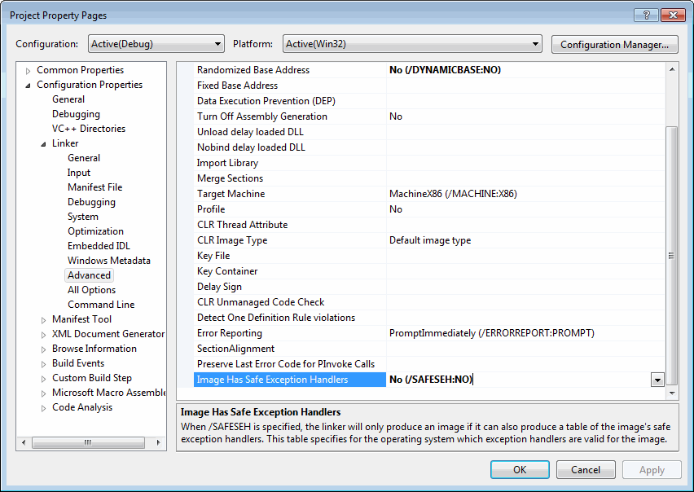
Step 12: Click the OK button to close the Property Pages window. Verify that your project has been created correctly by doing the following: (1) Add the AddTwo.asm program from the Chapter 3 examples folder to the project; (2) Build and debug the program as you did earlier in this tutorial.
Generating a Source Listing File
Open the project. From the menu, select Project, select Properties. In the list box, select Microsoft Macro Assembler, then select Listing File. Set the Assembled Code Listing file option to $(InputName).lst.
MASM syntax highlighting
When a text editor uses syntax highlighting, language keywords, strings, and other elements appear in different colors. Visual Studio highlights MASM reserved words and strings, as shown in the following example:

This won't happen automatically, but you can create a syntax definition file named Usertype.dat that contains MASM keywords. Then when Visual Studio starts, it reads the syntax file and highlights MASM keywords.
Here are the required steps to set up MASM syntax highlighting:
1) Download the Usertype.dat file (enclosed in a ZIP file) given here to a folder in which you have read/write permissions. If you are using Windows 7, download to My Documents, or C:\temp, or any folder that doesn't have security restrictions.
2) Copy Usertype.dat to the C:\Program Files\Microsoft Visual Studio 12.x\Common7\IDE folder. In 64-bit windows, Program Files will be named Program Files(x86).
Windows will display a verification dialog before copying the file.
3) Open Visual Studio, select Options from the Tools menu, select Text Editor, and select File Extension. On the right side of the dialog (shown below), enter asm as the extension, select Microsoft Visual C++ from the Editor list, and click the Add button. Click the OK button to save your changes.

Close Visual Studio and restart it. Open your project and display an ASM file. You should see syntax highlighting in the editor. There is a glitch in the highlighting--assembly language comment line starts start with a semicolon, which C++ doesn't recognize. But this is a simple workaround: add an extra // right after the semicolon, like this, which will cause the comments to appear in their usual green color:
;// AddTwo.asm - adds two 32-bit integers. ;// Chapter 3 exampleReturn to top